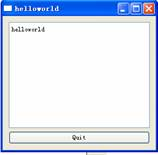
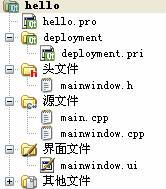
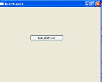

站长原创，版权所有ITEEDU，2011-08-01
到公司了，可能由于刚刚做完了前一个ocr的模块，老板还没来得及分配其他任务，所以我就抽空整理起ocr模块的知识来了。
待到下午2:40左右的时候，老板喊我过去，只用了几个词：QT N9 symbian系统，让我在网上找资料……
一头雾水的我，回到了电脑前边……
在google上搜了qt n9，看了半天得出一个结论：需要下载qt 4.7的库，上午早已让豆豆给我下载传过来了，这下就好了，进入我们的网站www.iteedu.com，qt学习心得文章http://www.iteedu.com/embed/embedarticles/GUI/qt/qtstudy.html中对qt的安装写的很清楚，照着做了一遍。
测试一下子：一切ok。
选择“文件”——>“新建”——>“其他项目”——>“空的QT项目”。
项目名称为helloworld
#include <QtGui>
int main(int argv, char **args)
{
QApplication app(argv, args);
QTextEdit textEdit;
QPushButton quitButton("Quit");
QObject::connect(&quitButton, SIGNAL(clicked()), qApp, SLOT(quit()));
QVBoxLayout layout;
layout.addWidget(&textEdit);
layout.addWidget(&quitButton);
QWidget window;
window.setLayout(&layout);
window.show();
return app.exec();
}
运行结果如图1-1：

图1-1测试结果
通过“文件”——>“新建”——>“Qt移动应用程序”
项目名称为:hello，其中已经自动生成好些东西，具体目录见图1-2所示：

图1-2 Qt移动应用程序
点击“界面文件”下边的mainwindow.ui，进入designer设计界面，在其中拖入一个button，并在button上显示“helloworld”，保存，重新编译，运行，结果如图1-3所示：

图1-3测试结果